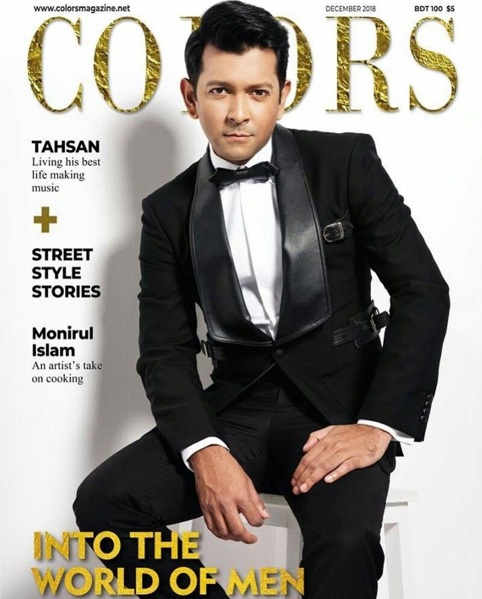
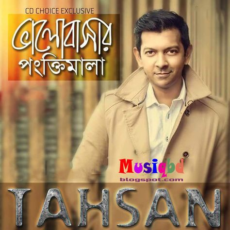
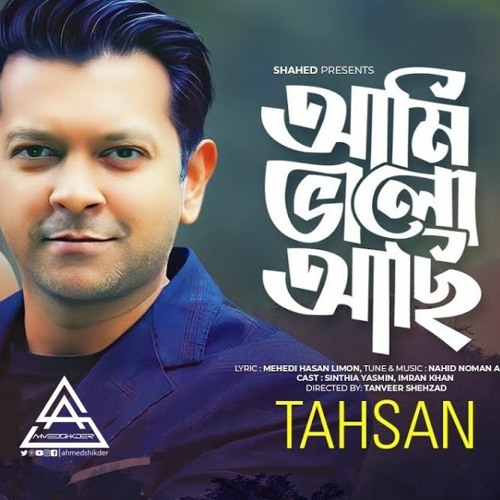
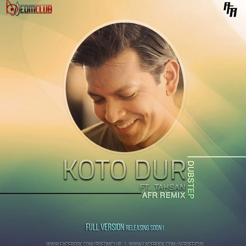
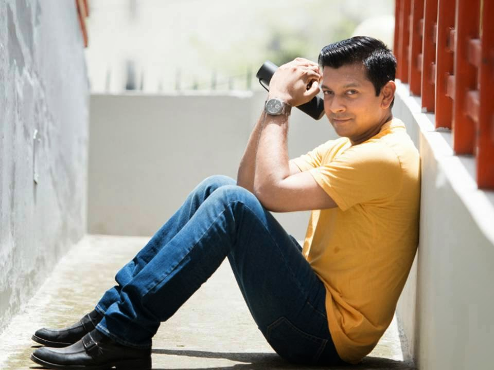
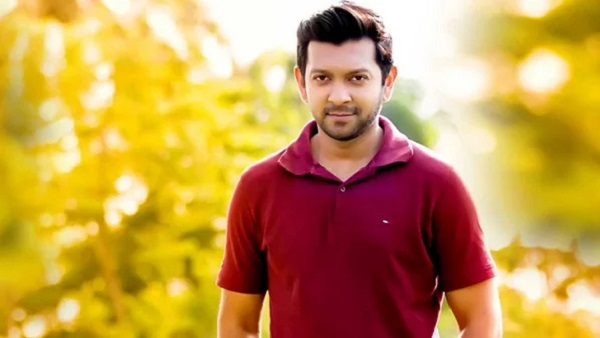
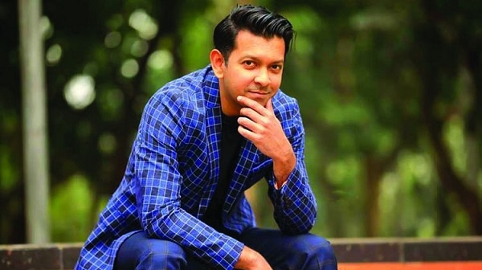
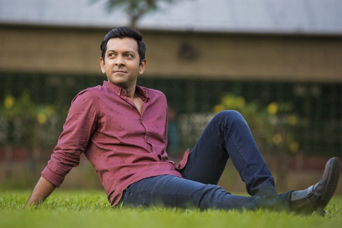
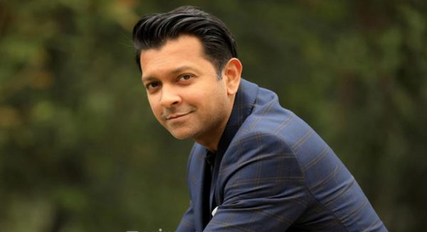
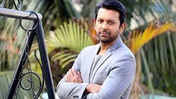

Tahsan Rahman Khan
Teacher , Actor , Model & Singer
Tahsan Rahman Khan (Bengali:তাহসান রহমান খান; born 18 October 1979)[2] is a Bangladeshi actor, model, singer, songwriter,composer and teacher. Born and raised in Dhaka, Tahsan first started his music career at 21 through the music band Black. He later left the band and started his solo music career with the release of the album Kothopokothon. He later started to act on television.
His works include studio albums, which are Kothopokothon (2004), Krittodasher Nirban (2005), Icchche (2006), Nei (2007), Prottaborton (2011), Uddessho Nei (2014), Obhiman Amar (2017). His work in films includes Chuye Dile Mon (2015), Jodi Ekdin (2019).
Song List Of Tahsan Rahman
- কেউ না জানুক
- ঈর্ষা
- একটাই তুমি
- তুমি ময়
- প্রেম তুমি
Tahsan Rahman Khan .... Albums
   Early Life & Education
Tahsan Khan learned singing at Shishu Academy and Chhayanaut.[1] He attended St. Joseph High School (Dhaka) and Notre Dame College, Dhaka. He obtained a BBA in marketing and an MBA in finance from the Institute of Business Administration, University of Dhaka.[2] He completed a second MBA at the University of Minnesota on a Fulbright scholarship.[4]
Some Pictures Of Tahsan Rahman Khan
     Tahsan Rahman Song
Tahsan Khan New Official Trailer
Achivement of Tahsan Rahman Khan